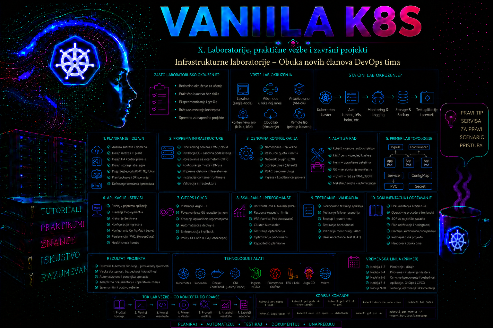

Vanilla Kubernetes

Ovaj dodatak pretvara ranije obrađeno znanje o Linux sistemu, container runtime-u, Kubernetes arhitekturi, mreži, skladištu, bezbednosti, observability-ju i troubleshooting-u u ponovljivu operativnu obuku. Polaznik ne dobija samo skup komandi: za svaku promenu mora da utvrdi početno stanje, predvidi uticaj, izvrši promenu u ograničenom obimu, prikupi dokaz i vrati sistem u poznato dobro stanje kada rezultat odstupa od očekivanog.
Referentni klaster ima jedan control plane i dva worker čvora. To je dovoljno za učenje raspoređivanja na više čvorova, Pod mreže, Service usmeravanja, deklarisanog stanja i kvarova radnog čvora, ali nije visoko dostupna produkciona topologija: nema redundantni API endpoint, redundantni control plane niti redundantni etcd. kubeadm formira minimalni klaster i PKI, static Pod manifeste i kubelet konfiguraciju; ne obezbeđuje virtuelne mašine, host mrežu, firewall, DNS, runtime, CNI, storage, load balancer, monitoring, backup ni organizacione kontrole.
Cilj infrastrukturne laboratorije
Obuka je završena tek kada polaznik može da izgradi klaster, objasni granice odgovornosti svakog sloja i dokaže funkcionalnost širu od izlaza kubectl get nodes. Mora da razlikuje grešku aplikacije od greške platforme, neuspešno raspoređivanje od mrežnog kvara, nedostupan volumen od nedostatka prostora u infrastrukturnom sloju i neispravan manifest od zabrane koju nameću RBAC ili policy kontrole.
- izgradnja višemašinskog klastera sa CRI-kompatibilnim runtime-om i CNI dodatkom;
- provera DNS-a, Pod-to-Pod komunikacije preko dva worker čvora i Service endpointa;
- rad sa Deployment, DaemonSet, Job, CronJob, ConfigMap i laboratorijskim Secret objektima;
- rollout, rollback, samoisceljivanje i resursni zahtevi i ograničenja;
- namespace i RBAC izolacija bez produkcionih identiteta i tajni;
- čitanje Events zapisa, kubelet i runtime journala i logova sistemskih Podova;
- kontrolisani incidenti, recovery i dokumentovan dokaz uzroka;
- očuvanje reproduktivnog klastera ili njegovo bezbedno potpuno resetovanje.
Referentna laboratorijska arhitektura sa tri virtuelne mašine
| Sistem | Uloga i interfejs | Adresa | OS i resursi | Razrešavanje i vreme |
|---|---|---|---|---|
admin.lab.example | Administratorska stanica, ens160 | 10.60.10.50/24 | Linux; 2 vCPU, 4 GB RAM, 30 GB | DNS ili /etc/hosts; NTP |
k8s-cp-01.lab.example | Control plane, ens160 | 10.60.10.11/24 | Ubuntu Server 24.04 LTS; 4 vCPU, 8 GB RAM, 80 GB | Napred/nazad; systemd-timesyncd ili organizacioni NTP |
k8s-worker-01.lab.example | Worker, ens160 | 10.60.10.21/24 | Ubuntu Server 24.04 LTS; 4 vCPU, 8 GB RAM, 100 GB | Isto |
k8s-worker-02.lab.example | Worker, ens160 | 10.60.10.22/24 | Ubuntu Server 24.04 LTS; 4 vCPU, 8 GB RAM, 100 GB | Isto |
| Mreža | Referentna vrednost | Namena i granica |
|---|---|---|
| Host/Node mreža | 10.60.10.0/24 | VM interfejsi i Kubernetes Node IP; gateway 10.60.10.1. |
| Pod CIDR | 192.168.0.0/16 | Adrese Podova koje dodeljuje Calico; ne rutirati kao host mrežu. |
| Service CIDR | 10.96.0.0/12 | Virtuelne ClusterIP adrese; nisu adrese host interfejsa. |
| LoadBalancer pool | 10.60.10.200–10.60.10.219 | Rezervisano za kasniju MetalLB vežbu; nije aktivirano ovim dodatkom. |
| Laboratorijski DNS domen | lab.example | Imena hostova; zameniti domenom pod kontrolom organizacije. |
| Kubernetes cluster domain | cluster.local | Interno Service/Pod DNS stablo; nije isto što i host DNS domen. |
Pre izgradnje proveriti da se host, Pod, Service, VPN i postojeći poslovni opsezi ne preklapaju. Preklapanje može proizvesti izbor pogrešne rute, nedostupan registry ili VPN, neispravnu CNI enkapsulaciju i Service adresu koju host smatra lokalnom. Promena Pod ili Service CIDR-a posle formiranja klastera nije rutinska korekcija; za ovu laboratoriju bezbednije je dokumentovati uzrok i ponoviti izgradnju.
Promenljive, verzije i granice referentnog profila
| Promenljiva | Vrednost | Provera pre upotrebe |
|---|---|---|
CONTROL_PLANE_IP | 10.60.10.11 | ip -br address na control plane čvoru. |
WORKER1_IP, WORKER2_IP | 10.60.10.21, 10.60.10.22 | DNS i dvosmerna povezanost. |
POD_CIDR | 192.168.0.0/16 | Bez preklapanja; usklađeno sa CNI konfiguracijom. |
SERVICE_CIDR | 10.96.0.0/12 | Bez preklapanja sa host, Pod, VPN i LB mrežama. |
KUBERNETES_MINOR | v1.36 | Zvanična supported-versions i kubeadm dokumentacija na dan izvođenja. |
CRI_SOCKET | unix:///run/containerd/containerd.sock | crictl info i aktivan containerd. |
CNI_VERSION | odobrena, verzionisana Calico verzija | Zvanična Calico matrica i release artefakt; nikada ne koristiti neprovereni latest. |
Shell promenljive važe samo u tekućoj sesiji. Sledeći blok menja samo shell okruženje, ali pogrešna vrednost kasnije menja značenje komandi. Pre svake upotrebe prikazati vrednosti; nijednu destruktivnu komandu ne graditi iz neproverene promenljive.
export CONTROL_PLANE_IP='10.60.10.11'
export POD_CIDR='192.168.0.0/16'
export SERVICE_CIDR='10.96.0.0/12'
export KUBERNETES_MINOR='v1.36'
printf 'CP=%s\nPOD=%s\nSERVICE=%s\nK8S=%s\n' \
"$CONTROL_PLANE_IP" "$POD_CIDR" "$SERVICE_CIDR" "$KUBERNETES_MINOR"
Profil je uređen prema dokumentaciji dostupnoj u avgustu 2026, dok footer zadržava izdavački datum jul 2026. Pre izvođenja proveriti aktuelni patch nivo, podržane minor verzije, containerd paket i Calico kompatibilnost. Kubernetes paketni repozitorijum je vezan za minor kanal; prelazak sa v1.36 na drugi minor zahteva novu proveru repozitorijuma i plana nadogradnje.
Izbor infrastrukturne platforme i aplikacija za obuku
Ista topologija može biti realizovana na VMware vSphere, Nutanix AHV, Hyper-V/Azure Local, KVM/libvirt ili Proxmox VE, OpenStack-u, fizičkim serverima ili javnom cloud-u. Kubernetes sloj ostaje prepoznatljiv, dok se razlikuju VM provisioning, mrežni segmenti, storage, load balancer, identiteti i cloud integracije. Novi član dobija sudo samo na dodeljenim laboratorijskim hostovima, SSH pristup sa administratorske stanice i Kubernetes identitet ograničen na laboratoriju; ne dobija produkcione tajne, široke vCenter/cloud privilegije ni pravo izmene zajedničkih mreža.
| Platforma | Prednost za obuku | Posebna granica |
|---|---|---|
| vSphere / Nutanix AHV | Resource pool, folder/projekat, konzola, kontrolisani snapshot i centralni kapacitet. | CSI, cloud provider i platformski lifecycle su zasebne napredne integracije. |
| Hyper-V / Azure Local | Windows-centric infrastruktura i PowerShell administracija. | VLAN, virtual switch, MAC spoofing ili overlay zahtevi proveravaju se sa mrežnim timom. |
| KVM / libvirt / Proxmox VE | Otvoren stack, bridge i cloud-init automatizacija. | Polaznik ne dobija neograničen root na zajedničkom hypervisoru. |
| OpenStack | Project, quota, security groups, Cinder i Octavia obrasci. | External CCM/CSI se uvode tek posle dokaza osnovnog klastera. |
| Bare metal | Realni firmware, NIC, disk i failure-domain problemi. | Reset je sporiji; BMC i mrežne privilegije moraju biti strogo ograničene. |
| Javni cloud | Brzo provisioning okruženje i automatizacija. | Budžet, egress, security groups i javne adrese; self-managed nije managed Kubernetes. |
| Lokalna radna stanica / edge | Dostupnost za individualnu vežbu. | Ograničeni resursi, NAT, promenljiva veza i arhitektura procesora. |
Posle osnovne validacije polaznik implementira portal-demo (Deployment, Service, ConfigMap), inventory-demo (StatefulSet ili Deployment, Service, laboratorijski Secret i PVC kada storage postoji) i report-job (Job/CronJob). Image-i moraju dolaziti iz odobrenog registra i ne smeju sadržati poslovne podatke; vrednost poput LAB_ONLY_CHANGE_ME jasno razdvaja vežbu od stvarne tajne.
Mapa laboratorije
| Faza | Mesto | Promena | Dokaz uspeha |
|---|---|---|---|
| 1–4. Dizajn i infrastruktura | Admin stanica i svi hostovi | VM, imena, vreme, mreža i portovi | Inventar, getent, timedatectl, ip route, ss |
| 5–8. Priprema node-a | Svi Kubernetes čvorovi | Kernel, swap, containerd i Kubernetes paketi | sysctl, swapon, crictl info, verzije i pre-flight |
| 9–12. Bootstrap | Control plane, zatim worker-i | kubeadm init, kubeconfig, CNI i join | API dostupan, CNI Podovi zdravi, tri Node objekta |
| 13–14. Funkcionalni dokaz | Admin stanica / control plane | DNS, workload i Service | cross-node komunikacija, endpointi, samoisceljivanje |
| 15. Incidenti | Ograničeni laboratorijski cilj | Reverzibilni kvarovi | dokaz uzroka, korekcije i oporavka |
| 16. Evidencija i odluka | Admin stanica i svi čvorovi | checkpoint ili destruktivni reset | arhiva dokaza ili potvrđeno čisto stanje |
Faza 1 – projektovanje topologije i kompatibilnih verzija
Mesto i nalog: administratorska stanica, običan korisnik; read-only planiranje. Rizik: nema promene sistema, ali pogrešan plan kasnije stvara teško popravljive mrežne i verzijske konflikte.
- Popuniti inventar tačnim IP, MAC, interfejs, gateway, DNS, NTP i proxy vrednostima.
- Uporediti host, Pod, Service, VPN i rezervisani LB opseg.
- Proveriti zvanične Kubernetes supported-versions, kubeadm version-skew, containerd CRI i Calico compatibility reference.
- Zabeležiti odobrene package i image registry izvore i checksum/provenance politiku.
Kontrolna tačka: nijedan CIDR se ne preklapa, svaka vrednost ima vlasnika i izvor, a minor kanal i CNI artefakt su eksplicitno verzionisani. Ako uslov nije ispunjen, ne kreirati klaster.
Faza 2 – priprema virtuelnih ili fizičkih mašina
Mesto i nalog: infrastrukturna konzola, ovlašćeni infrastrukturni administrator; state-changing. Kreirati tri VM-a iz odobrenog i ažuriranog Ubuntu Server 24.04 LTS template-a, dodeliti resurse iz topologije i jedan stabilni mrežni interfejs. Snapshot koristiti samo kao kratkotrajnu laboratorijsku kontrolnu tačku uz konzistentno gašenje; snapshot nije backup niti bezbedan način vraćanja živog višemašinskog etcd stanja.
Kontrolna tačka: sve mašine se podižu, diskovi i NIC-ovi odgovaraju inventaru, administratorski SSH ključ radi, a polaznik ima sudo samo u laboratoriji. Ako template sadrži duplirani machine-id ili SSH host ključeve, ispraviti template i ponovo kreirati VM, ne maskirati problem u Kubernetes sloju.
Faza 3 – hostname, razrešavanje imena i vremenska sinhronizacija
Mesto i nalog: svaki čvor pojedinačno, korisnik sa sudo; prve komande menjaju stanje, završne ga čitaju.
# Primer samo na prvom control plane čvoru; na worker-ima postaviti njihova imena.
sudo hostnamectl set-hostname k8s-cp-01.lab.example
# Read-only validacija na svakom čvoru.
hostnamectl
getent hosts k8s-cp-01.lab.example k8s-worker-01.lab.example k8s-worker-02.lab.example
timedatectl status
Ako interni DNS nije dostupan, na sva četiri sistema uneti identičan, dokumentovan /etc/hosts skup. Ne mapirati ime čvora na 127.0.1.1. Vreme mora biti sinhronizovano; značajan drift kvari sertifikate, tokene i korelaciju logova. Kontrolna tačka: sva imena daju očekivane Node IP adrese, timedatectl prikazuje sinhronizovan sat.
Faza 4 – mreža, portovi, firewall, MTU i rutiranje
Mesto i nalog: svi čvorovi i admin stanica; read-only dok se ne potvrdi konkretno firewall pravilo. Ne gasiti firewall kao trajnu korekciju.
ip -br address
ip route
ping -c 3 10.60.10.11
ping -c 3 10.60.10.21
getent ahostsv4 k8s-cp-01.lab.example
sudo ss -lntup
ip link show ens160Dozvoliti samo dokumentovane Kubernetes portove: API server TCP 6443 prema control plane-u; etcd 2379–2380 i scheduler/controller-manager/kubelet portove u skladu sa zvaničnom tabelom i izvorima; kubelet TCP 10250 prema čvorovima, NodePort 30000–32767 samo ako vežba to zahteva, plus Calico protokole/portove prema izabranom dataplane režimu. MTU mora uračunati overlay overhead; simptom previsokog MTU-a često je selektivno prekidanje većih paketa i TLS tokova, ne potpuni gubitak pinga.
Kontrolna tačka: očekivane rute su jednoznačne, Node IP se vezuje za pravi interfejs, potrebni tokovi prolaze, a neočekivano široka pravila ne postoje. Port može biti zatvoren pre pokretanja komponente; ponoviti proveru posle bootstrap-a.
Faza 5 – kernel moduli, sysctl i swap
Mesto i nalog: svi Kubernetes čvorovi, sudo; state-changing, reverzibilno uz uklanjanje drop-in datoteka i reboot.
sudo modprobe overlay
sudo modprobe br_netfilter
printf '%s\n' overlay br_netfilter | sudo tee /etc/modules-load.d/k8s.conf
sudo tee /etc/sysctl.d/99-kubernetes-cri.conf > /dev/null <<'EOF'
net.bridge.bridge-nf-call-iptables = 1
net.bridge.bridge-nf-call-ip6tables = 1
net.ipv4.ip_forward = 1
EOF
sudo sysctl --system
sudo swapoff -a
lsmod | grep -E 'overlay|br_netfilter'
sysctl net.bridge.bridge-nf-call-iptables net.ipv4.ip_forward
swapon --show
Za ponovljiv laboratorijski profil komentarisati ili ukloniti swap unos iz /etc/fstab tek posle kopije i provere tačnog reda. Novije Kubernetes verzije imaju konfigurisane mogućnosti za swap, ali one nisu podrazumevano opravdanje da se warning ignoriše. Ova vežba koristi swap isključen. Kontrolna tačka: moduli su učitani, parametri imaju vrednost 1, a swapon --show nema izlaz.
Faza 6 – instalacija i konfiguracija containerd runtime-a
Mesto i nalog: svi čvorovi, sudo; state-changing. Paket preuzeti iz odobrenog Ubuntu ili organizacionog repozitorijuma. CRI dodatak ne sme biti u disabled_plugins, a kubelet i runtime koriste systemd cgroup upravljač.
sudo apt-get update
sudo apt-get install -y containerd
sudo install -d -m 0755 /etc/containerd
containerd config default | sudo tee /etc/containerd/config.toml > /dev/null
# U odgovarajućoj runc options sekciji generisane konfiguracije postaviti:
# SystemdCgroup = true
sudo editor /etc/containerd/config.toml
sudo systemctl enable --now containerd
sudo systemctl restart containerd
systemctl is-active containerd
containerd --version
sudo grep -n 'SystemdCgroup' /etc/containerd/config.toml
sudo journalctl -u containerd --since '-10 min' --no-pager
Putanja sekcije u config.toml zavisi od containerd glavne verzije; ne primenjivati slepi sed nad nepoznatim formatom. Posle instalacije cri-tools usmeriti crictl na unix:///run/containerd/containerd.sock i proveriti sudo crictl info. Kontrolna tačka: servis je active, CRI odgovara bez unknown service runtime.v1, nema ponavljanog pada shim procesa i SystemdCgroup je potvrđen u važećoj sekciji.
Faza 7 – instalacija kubeadm, kubelet i kubectl paketa
Mesto i nalog: svi čvorovi, sudo; state-changing. Ključ repozitorijuma čuvati u dedicated keyring-u; zastareli apt-key postupak se ne koristi.
sudo apt-get update
sudo apt-get install -y apt-transport-https ca-certificates curl gpg
sudo install -m 0755 -d /etc/apt/keyrings
curl -fsSL "https://pkgs.k8s.io/core:/stable:/${KUBERNETES_MINOR}/deb/Release.key" \
| sudo gpg --dearmor -o /etc/apt/keyrings/kubernetes-apt-keyring.gpg
echo "deb [signed-by=/etc/apt/keyrings/kubernetes-apt-keyring.gpg] https://pkgs.k8s.io/core:/stable:/${KUBERNETES_MINOR}/deb/ /" \
| sudo tee /etc/apt/sources.list.d/kubernetes.list
sudo apt-get update
apt-cache madison kubeadm
# Izabrati isti dostupni patch string za sva tri paketa, pa instalirati eksplicitno.
sudo apt-get install -y kubelet='<PATCH-1.1>' kubeadm='<PATCH-1.1>' kubectl='<PATCH-1.1>'
sudo apt-mark hold kubelet kubeadm kubectl
kubeadm version -o short
kubelet --version
kubectl version --client
Zamena <PATCH-1.1> mora biti tačan string iz apt-cache madison; uglaste zagrade se ne unose. Kubelet može da se restartuje dok kubeadm ne napiše konfiguraciju i to je očekivano, ali runtime greške nisu. Kontrolna tačka: isti minor/patch je instaliran na svim čvorovima i paketi su hold-ovani.
Faza 8 – pre-flight i početni dokaz
Mesto i nalog: svi čvorovi; pretežno read-only. kubeadm init phase preflight na control plane-u vrši provere, ali ne treba ignorisati fatalne greške.
hostname -f
ip -br address
free -h
df -hT /
swapon --show
systemctl is-active containerd
systemctl is-enabled kubelet
sudo crictl info
sudo kubeadm init phase preflight --config /root/kubeadm-config.yaml
Pre poslednje komande u fazi 9 kreira se konfiguraciona datoteka; ovde se pre-flight može izvršiti tada ili koristiti odgovarajuće eksplicitne parametre. Warning nije automatski kvar, ali mora biti objašnjen i evidentiran. Ne koristiti --ignore-preflight-errors=all. Sačuvati verzije, rute, sysctl, aktivne servise i journale kao početni dokaz.
Faza 9 – inicijalizacija prve kontrolne ravni
Mesto i nalog: samo k8s-cp-01, korisnik sa sudo; state-changing i kritično. Konfiguracioni fajl smanjuje greške u dugoj komandnoj liniji i postaje reproduktivni dokaz.
apiVersion: kubeadm.k8s.io/v1beta4
kind: InitConfiguration
localAPIEndpoint:
advertiseAddress: 10.60.10.11
bindPort: 6443
nodeRegistration:
criSocket: unix:///run/containerd/containerd.sock
---
apiVersion: kubeadm.k8s.io/v1beta4
kind: ClusterConfiguration
kubernetesVersion: v1.36.0
controlPlaneEndpoint: "10.60.10.11:6443"
networking:
dnsDomain: cluster.local
podSubnet: 192.168.0.0/16
serviceSubnet: 10.96.0.0/12
Vrednost kubernetesVersion zameniti stvarno instaliranim patch nivoom. Direktna IP adresa kao controlPlaneEndpoint prihvatljiva je samo za ovu single-control-plane laboratoriju; HA dizajn koristi stabilan DNS naziv iza load balancer-a.
sudo install -m 0600 /dev/null /root/kubeadm-config.yaml
sudo editor /root/kubeadm-config.yaml
sudo kubeadm config validate --config /root/kubeadm-config.yaml
sudo kubeadm init --config /root/kubeadm-config.yaml --upload-certs=false
Očekuju se preuzimanje image-a, generisanje PKI materijala, kubeconfig datoteka, static Pod manifesta, bootstrap RBAC pravila i join instrukcija. Ako komanda padne, sačuvati kompletan izlaz, journalctl -u kubelet i crictl ps -a; ne ponavljati naslepo. Kontrolna tačka: port 6443 sluša, static Pod kontejneri rade i kubeadm završava porukom o uspešnoj inicijalizaciji.
Faza 10 – kubeconfig i join podaci
Mesto i nalog: control plane, običan administratorski nalog sa sudo; kopiranje menja korisnički fajl. admin.conf daje široke privilegije i ne deli se kao onboarding identitet.
mkdir -p "$HOME/.kube"
sudo cp -i /etc/kubernetes/admin.conf "$HOME/.kube/config"
sudo chown "$(id -u):$(id -g)" "$HOME/.kube/config"
chmod 0600 "$HOME/.kube/config"
kubectl cluster-info
kubectl get --raw='/readyz?verbose'
# Generisati kratkotrajnu join komandu samo kada je potrebna.
sudo kubeadm token create --ttl 30m --print-join-commandBootstrap token je tajna i podrazumevano ima ograničen rok; u ovoj vežbi eksplicitno traje 30 minuta. Ne unositi ga u dokumentaciju, tiket ili verzionisani repozitorijum. Ako istekne, generisati novu komandu umesto produžavanja stare. Shell history može sačuvati token: upotrebiti zaštićeni privremeni kanal ili ručno uneti komandu na worker-u i zatim ukloniti odgovarajući history unos prema politici organizacije.
Faza 11 – instalacija i validacija Calico CNI dodatka
Mesto i nalog: admin stanica ili control plane sa funkcionalnim kubeconfig-om; state-changing u klasteru. Calico je izabran zbog višemašinske mreže i NetworkPolicy mogućnosti; njegove CRD i napredne funkcije nisu deo osnovnog Kubernetes API-ja.
# URL mora pokazivati tačno odobreni verzionisani release, ne latest.
curl -fL -o calico.yaml 'https://raw.githubusercontent.com/projectcalico/calico/<CNI_VERSION>/manifests/calico.yaml'
sha256sum calico.yaml
grep -nE 'CALICO_IPV4POOL_CIDR|192\.168\.0\.0/16|image:' calico.yaml
kubectl apply --server-side --dry-run=server -f calico.yaml
kubectl apply -f calico.yaml
kubectl -n kube-system rollout status daemonset/calico-node --timeout=5m
kubectl -n kube-system get pods -o wide
kubectl get nodes -o wide
Zamenske zagrade u URL-u moraju se zameniti realnom verzijom. Manifest se pre primene čuva, proverava i arhivira sa checksum-om. Čvorovi mogu ostati NotReady dok CNI nije funkcionalan. Ako Calico Podovi nisu zdravi, proveriti Events, njihove logove, kernel module, forwarding, MTU, firewall i usklađenost Pod CIDR-a; ne nastavljati na join samo zato što API radi.
Faza 12 – povezivanje radnih čvorova
Mesto i nalog: samo worker čvorovi, korisnik sa sudo; state-changing. Na svakom worker-u upotrebiti sveže generisanu komandu, sa stvarnim tokenom i CA hash-om:
sudo kubeadm join 10.60.10.11:6443 \
--token <KRATKOTRAJNI_TOKEN> \
--discovery-token-ca-cert-hash sha256:<CA_HASH> \
--cri-socket unix:///run/containerd/containerd.sock
Ne koristiti --discovery-token-unsafe-skip-ca-verification. Kod isteka tokena generisati novi na control plane-u. Kod delimičnog neuspeha prvo prikupiti kubelet/runtime logove i proveriti DNS, vreme i 6443; kubeadm reset koristiti tek kada je potvrđeno da worker treba vratiti u pre-join stanje. Kontrolna tačka: sa admin stanice se vide tri čvora, oba worker-a postaju Ready, a Calico DaemonSet ima očekivani Pod na svakom čvoru.
Faza 13 – dokaz sistemske mreže, DNS-a i servisa
Mesto i nalog: admin stanica, Kubernetes administrator; read-only osim kreiranja izolovanog namespace-a i test objekata.
kubectl get nodes -o wide
kubectl -n kube-system get pods -o wide
kubectl -n kube-system get events --sort-by=.lastTimestamp
kubectl get --raw='/readyz?verbose'
kubectl create namespace lab-validation
kubectl -n lab-validation run dns-test --image=registry.k8s.io/e2e-test-images/agnhost:2.53 \
--restart=Never --command -- sleep 3600
kubectl -n lab-validation wait --for=condition=Ready pod/dns-test --timeout=120s
kubectl -n lab-validation exec dns-test -- nslookup kubernetes.default.svc.cluster.local
Image verziju proveriti i mirror-ovati u odobreni registry ako laboratorija nema direktan pristup. DNS dokaz mora vratiti ClusterIP servisa kubernetes. Zatim napraviti po jedan test Pod na svakom worker-u pomoću nodeSelector ili eksplicitnog kubernetes.io/hostname izbora i dokazati ping ili TCP/HTTP tok od jednog Pod-a ka Pod IP adresi drugog. Ako ICMP nije podržan image-om ili politikom, koristiti TCP server i curl; cilj je cross-node dataplane, ne konkretan alat.
Faza 14 – probni workload i deklarisano stanje
apiVersion: apps/v1
kind: Deployment
metadata:
name: portal-demo
namespace: lab-validation
spec:
replicas: 2
selector:
matchLabels:
app: portal-demo
template:
metadata:
labels:
app: portal-demo
spec:
containers:
- name: web
image: registry.k8s.io/e2e-test-images/agnhost:2.53
args: ["netexec", "--http-port=8080"]
ports:
- containerPort: 8080
readinessProbe:
httpGet:
path: /healthz
port: 8080
initialDelaySeconds: 2
periodSeconds: 3
resources:
requests: {cpu: 25m, memory: 32Mi}
limits: {cpu: 200m, memory: 128Mi}
---
apiVersion: v1
kind: Service
metadata:
name: portal-demo
namespace: lab-validation
spec:
selector:
app: portal-demo
ports:
- port: 80
targetPort: 8080Mesto i nalog: admin stanica; kubectl apply menja stanje samo u lab-validation. Sačuvati manifest kao portal-demo.yaml, izvršiti server-side dry-run, pa primeniti i proveriti:
kubectl apply --server-side --dry-run=server -f portal-demo.yaml
kubectl apply -f portal-demo.yaml
kubectl -n lab-validation rollout status deployment/portal-demo --timeout=2m
kubectl -n lab-validation get pods -l app=portal-demo -o wide
kubectl -n lab-validation get service portal-demo
kubectl -n lab-validation get endpointslice -l kubernetes.io/service-name=portal-demo
kubectl -n lab-validation exec dns-test -- curl -fsS http://portal-demo/
# Samoisceljivanje: obrisati samo jedan testni Pod, ne Deployment.
kubectl -n lab-validation delete pod -l app=portal-demo --field-selector=status.phase=Running --wait=false
kubectl -n lab-validation rollout status deployment/portal-demo --timeout=2m
kubectl -n lab-validation get pods -l app=portal-demo -o wide
Ako selektor obriše oba Pod-a, Deployment ih ipak ponovo kreira; za preciznu vežbu prvo izabrati jedno ime iz read-only izlaza i obrisati baš taj Pod. Dokaz obuhvata dva Ready Pod-a, EndpointSlice sa njihovim adresama, uspešan Service HTTP odgovor i obnovljene replike posle brisanja. Pregledati Events i logove; Ready Node objekti sami nisu dovoljan dokaz.
Faza 15 – kontrolisani incidenti i sistematičan troubleshooting
Svaki incident izvodi se jedan po jedan, samo u laboratoriji, uz početni dokaz i vremenski zapis. Obrazac izveštaja je: simptom; obim; posledica; poslednja promena; dokazi; hipoteza; neposredni i osnovni uzrok; privremeno rešenje ako je opravdano; trajna korekcija; potvrda oporavka; naučena preventivna kontrola.
| Incident i bezbedna granica | Dokazi | Korekcija i potvrda |
|---|---|---|
Zaustavljen kubelet samo na k8s-worker-02 najviše 5 minuta. | systemctl status kubelet, journalctl -u kubelet --since '-10 min', Node Conditions i Events. | sudo systemctl start kubelet; Node ponovo Ready, Podovi i Calico zdravi. |
| Istekao ili namerno nevažeći join token na svežem resetovanom worker-u. | kubeadm token list, join izlaz, vreme i API dostupnost. | Generisati 30-minutni token i novu join komandu; potvrditi Node i ukloniti stari token. |
| Pogrešan hostname unos samo na jednom worker-u, uz prethodnu kopiju. | getent hosts, hostname -f, kubelet journal i Node adresa. | Vratiti tačan unos/DNS; ponoviti rezoluciju i komponentne provere. |
| Privremeno blokiran TCP 6443 samo sa jednog worker-a, sa automatskim istekom pravila. | curl -k https://10.60.10.11:6443/livez, firewall counter, kubelet journal. | Ukloniti tačno laboratorijsko pravilo; potvrditi API tok i Ready stanje. Ne gasiti firewall. |
| CNI Pod greška simulirana skaliranjem test workload-a ili pogrešnom kopijom manifesta u dry-run-u; ne menjati živi Pod CIDR bez rebuild plana. | CNI Pod log, Events, route/link stanje, IP pool i MTU. | Vratiti verzionisani odobreni manifest; rollout i cross-node test moraju proći. |
# Primer read-only korelacije za problematičan worker.
kubectl describe node k8s-worker-02
kubectl get events -A --sort-by=.lastTimestamp
sudo systemctl status kubelet --no-pager
sudo journalctl -u kubelet --since '-15 min' --no-pager
sudo journalctl -u containerd --since '-15 min' --no-pager
sudo crictl ps -a
sudo crictl pods
U journalu tražiti prvi uzročni događaj, ne poslednju kaskadnu poruku: CRI socket ili cgroup grešku, timeout API servera, CNI sandbox neuspeh, sertifikat ili DNS problem. Kubernetes Events imaju ograničenu retenciju i nisu audit log. Kod sistemskog Pod-a koristiti kubectl -n kube-system logs, po potrebi --previous, i korelisati timestamp sa kubelet/runtime journalom.
Faza 16 – evidencija, kontrolna tačka i odluka o očuvanju ili resetovanju
Pre obe odluke: sa admin stanice sačuvati inventar, IP plan, tačne verzije, checksum CNI manifesta, redigovanu kubeadm konfiguraciju, kubectl get nodes -o wide, sistemske Podove, Events, rezultate DNS/Service/cross-node testova i incidentni zapis. Ne arhivirati token, privatni ključ niti nepromenjen admin.conf u nezaštićen repozitorijum.
Mogućnost A – očuvanje funkcionalnog klastera
Ukloniti privremene incidentne promene, promeniti laboratorijske Secret vrednosti ako su deljene, opozvati bootstrap tokene, proveriti da nema otvorenih privremenih firewall pravila i zabeležiti vlasnika, datum isteka i sledeći projekat. Ovaj klaster tada postaje osnova za RBAC, NetworkPolicy, storage, observability i GitOps vežbe.
sudo kubeadm token list
kubectl get nodes -o wide
kubectl get pods -A
kubectl get events -A --field-selector=type=Warning --sort-by=.lastTimestamp
kubectl -n lab-validation get deploy,po,svc,endpointsliceMogućnost B – potpuno resetovanje laboratorije
DESTRUKTIVAN LABORATORIJSKI POSTUPAK: briše lokalno kubeadm stanje i članstvo čvorova; primenjuje se samo na eksplicitno navedena tri laboratorijska čvora posle izvoza dokaza. Prvo drain/delete worker-e kada je API dostupan, zatim resetovati worker-e, a control plane poslednji.
# Na admin stanici, samo za dva laboratorijska worker-a:
kubectl drain k8s-worker-01 --ignore-daemonsets --delete-emptydir-data
kubectl drain k8s-worker-02 --ignore-daemonsets --delete-emptydir-data
kubectl delete node k8s-worker-01 k8s-worker-02
# Na svakom worker-u, zatim na control plane-u; sudo, destruktivno:
sudo kubeadm reset --cri-socket unix:///run/containerd/containerd.sock
kubeadm reset ne čisti nužno CNI konfiguraciju u /etc/cni/net.d, mrežne interfejse, iptables/nftables pravila, IPVS stanje, korisnički $HOME/.kube/config, container image-e ni spoljne volumene. Posle reset-a pregledati, pa prema dokumentaciji konkretne CNI verzije ukloniti samo potvrđene laboratorijske artefakte. Ne koristiti široke naredbe za flush firewall-a na deljenom ili udaljenom hostu. Najbezbedniji potpuni cleanup VM laboratorije je brisanje tačno identifikovanih VM-ova iz izdvojenog foldera posle potvrde da nema potrebnih podataka.
Minimalne dozvole novog člana DevOps i platformskog tima
- SSH i konzola samo za dodeljene VM-ove;
sudounutar njih, bez hypervisor root pristupa; - read-only uvid u resurse i događaje svojih VM-ova, uz ograničeno power upravljanje;
- bez prava izmene zajedničkog VLAN-a, datastore-a, cloud mreža, kvota i produkcionih security group pravila;
- poseban Kubernetes identitet;
admin.confsamo za vođeni bootstrap, zatim RBAC najmanjih privilegija; - bez produkcionih registry, cloud, backup, DNS ili storage kredencijala;
- odobren kanal za kratkotrajne join podatke i evidentirana eskalacija kada vežba zahteva infrastrukturnu promenu.
Predlog progresivnog programa obuke
| Etapa | Zadatak | Merljivi izlaz |
|---|---|---|
| 1. Posmatranje | Čitanje inventara, topologije, događaja i logova bez promene. | Tačna mapa zavisnosti i lista rizika. |
| 2. Vođena izgradnja | Faze 1–14 uz peer review pre state-changing komandi. | Kompletan dokaz funkcionalnosti. |
| 3. Workload operacije | Tri aplikaciona obrasca, rollout, rollback, resursi i izolacija. | Manifeste prolaze dry-run i acceptance test. |
| 4. Incident | Jedan infrastrukturni i jedan Kubernetes kvar. | RCA sa dokazom osnovnog uzroka i recovery-ja. |
| 5. Samostalno ponavljanje | Rebuild iz praznih VM-ova ili očuvan reproducible checkpoint. | Druga uspešna izgradnja bez neizrečenih koraka. |
Administratorske prakse
- Voditi inventar hostova, Node IP adresa, CIDR opsega, verzija, image-a, checksum-a i vlasnika laboratorije.
- Pre svake promene razlikovati read-only dokaz od state-changing komande i definisati očekivani rezultat i rollback.
- Pinovati minor kanal i tačan patch paket; ne koristiti neobjašnjene
latestilistableoznake. - Čuvati redigovanu kubeadm i CNI konfiguraciju; privatne ključeve, kubeconfig i join podatke tretirati kao tajne.
- Validirati posle svake faze, ne nastavljati preko neobjašnjenog warning-a ili fatalne pre-flight greške.
- Pre korekcije prikupiti vreme, poslednju promenu, Events, komponentne logove, mrežno i servisno stanje.
- Vežbu učiniti ponovljivom: ista ulazna matrica mora dati isto proverljivo stanje ili objašnjeno odstupanje.
Završna kontrolna tačka
Polaznik je završio dodatak kada može da priloži sledeće dokaze:
- tabelu topologije i dokaz da host, Pod, Service, VPN i LB opsezi nisu u sukobu;
hostnamectl,getent,timedatectl, module, sysctl i swap dokaze sa sva tri čvora;- aktivan containerd, uspešan CRI upit i usklađen
systemdcgroup driver; - isti pinovani Kubernetes patch nivo na svim čvorovima i objašnjen version-skew okvir;
- redigovanu kubeadm konfiguraciju i uspešne API
readyzprovere; - tri očekivana Ready čvora, zdrave
kube-systemPodove i CNI Pod na svakom čvoru; - CoreDNS odgovor, cross-node Pod tok, Service EndpointSlice i uspešan HTTP odgovor;
- dokaz samoisceljivanja Deployment-a posle brisanja testnog Pod-a;
- Events i komponentne logove bez nerešene kritične greške;
- RCA najmanje jednog namerno izazvanog incidenta, sa potvrdom oporavka;
- objašnjenje zašto jedan control plane nije HA;
- dokumentovanu odluku o očuvanju klastera ili dokaz bezbednog resetovanja.
Zaključak
Operativna laboratorija je uspešna kada novi član tima ne pamti samo redosled komandi, već ume da poveže host, runtime, kubelet, control plane, CNI, DNS i workload u jedan dokaziv sistem. Najvažniji rezultat nije brzina izgradnje, nego navika da se pre promene definišu granica i rizik, tokom rada čuvaju dokazi, a posle promene proveri stvarna funkcija sistema.
Single-control-plane klaster ostaje nastavno pojednostavljenje. On ne nasleđuje automatski produkcionu dostupnost, bezbednost, backup, observability ni podršku proizvođača. Upravo jasno razumevanje tih granica priprema polaznika da u narednim integrisanim projektima donosi odgovorne odluke, traži potrebnu infrastrukturnu saradnju i razlikuje privremeni laboratorijski uspeh od održivog produkcionog rešenja.